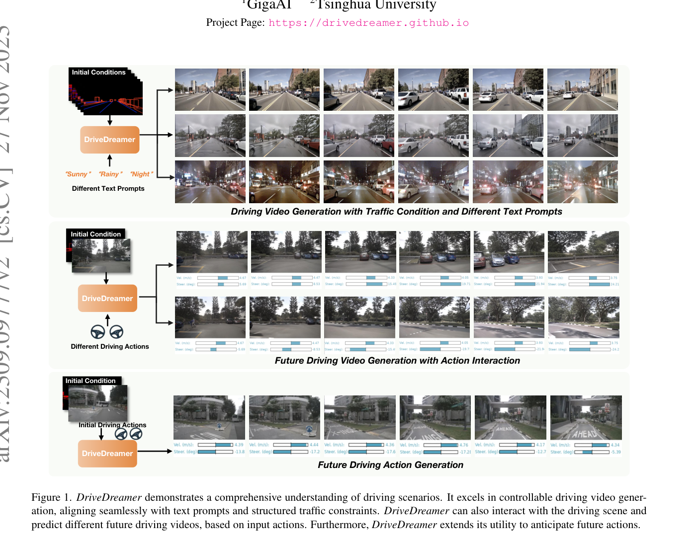
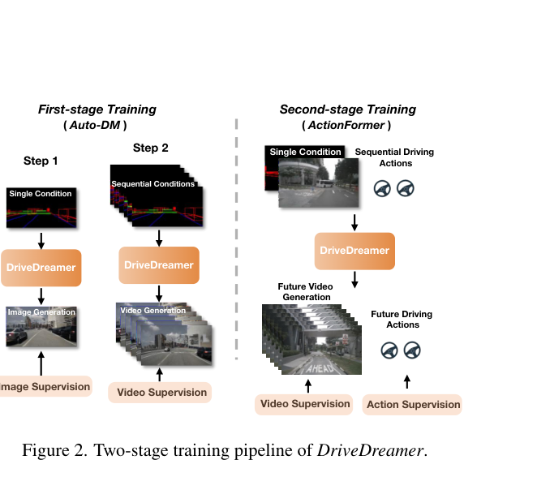
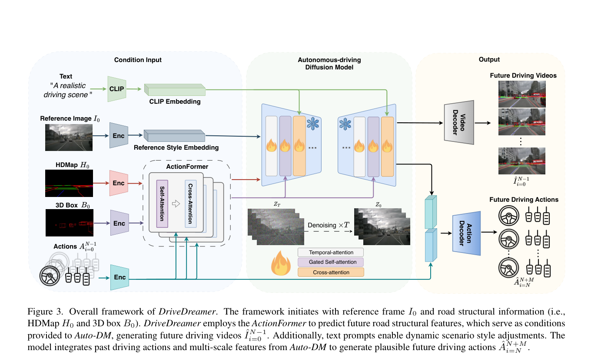

DriveDreamer: Towards Real-World-Driven World Models for Autonomous Driving
DriveDreamer 以真实驾驶场景为训练来源，用 HDMap、3D boxes、文本和动作作为结构条件，通过两阶段 diffusion pipeline 生成可控未来驾驶视频并辅助动作预测。
real-world-driven world model、diffusion model、Auto-DM、ActionFormer、HDMap condition、3D box condition、nuScenes、controllable video generation
Diffusion world model / structured traffic condition
是，项目页和代码公开
高：真实驾驶 diffusion world model 代表
计划公网链接：https://ixgnozeix.github.io/paper-reports/report/drivedreamer/
1. 论文速览
DriveDreamer 的核心是把世界模型从游戏/仿真环境搬到真实驾驶数据。第一阶段让 diffusion 模型学习 HDMap 和 3D boxes 等结构交通约束；第二阶段加入 ActionFormer 预测未来结构条件，再由 Auto-DM 生成未来视频，同时用多尺度 latent features 和历史动作预测未来 driving actions。论文报告 DriveDreamer 可生成与文本、结构条件和动作一致的视频；在 open-loop action generation 上平均 L2 轨迹误差约 0.29m，并且合成数据提升 FCOS3D mAP +0.7、BEVFusion mAP +3.0。
2. 研究问题与动机
世界模型若只在游戏/仿真中训练，缺少真实道路复杂性；但真实驾驶视频空间巨大，直接无约束生成容易失控。DriveDreamer 的假设是：用结构交通条件缩小搜索空间，把道路拓扑和 3D 目标布局作为生成骨架，再让 diffusion 负责视觉细节和时序未来。这样可以同时服务视频生成、动作交互和数据增强。
4. 方法详解
DriveDreamer 包括 ActionFormer 和 Auto-DM。给定初始帧 I0、HDMap H0、3D boxes B0 和动作历史，ActionFormer 在 latent space 预测未来道路结构特征；Auto-DM 接收空间对齐条件、位置条件和文本条件，通过 diffusion denoising 生成未来视频。两阶段训练先学习结构交通约束，再学习时序未来与动作交互。动作预测分支将 Auto-DM 的多尺度 latent features 与历史 action 融合，输出未来动作。
5. 实验与结果
实验在 nuScenes。视频生成评估使用 FID/FVD 等质量指标和可控性展示；动作生成评估报告平均 L2 约 0.29m。合成数据用于 3D 检测增强，FCOS3D 和 BEVFusion 的 mAP 分别提升 0.7 和 3.0，说明生成数据可作为感知增广。定性结果展示 sunny/rainy/night 文本控制、不同动作导致不同未来。证据缺口是动作预测仍是 open-loop，生成视频是否能安全训练 policy 尚未充分验证。
6. 复现要点
最小复现需要 nuScenes 图像、HDMap、3D box、ego action 序列。先训练/加载 Auto-DM，验证给定单帧和结构条件能生成短视频；再训练 ActionFormer 预测未来条件。硬件需要多卡更稳，单卡可尝试低分辨率/短序列。阻塞点是 map/box 与图像空间对齐、diffusion 训练成本和 FVD 评估。验收标准是条件一致性、视频质量指标和动作预测 L2。
7. 分析、局限与边界
DriveDreamer 的贡献是结构条件化真实驾驶 diffusion world model。它证明结构约束能让真实驾驶视频生成更可控，但不能证明生成 rollout 的物理因果足够可靠。后续可把其生成未来接入 planner reward，或与 OccWorld 的 3D occupancy 约束结合，减少像素生成中的幻觉。
8. 组会问答准备
A：它们提供道路和动态目标的结构骨架，降低真实驾驶视频生成的搜索空间。
A：预测未来结构交通特征，作为 Auto-DM 生成未来视频的条件。
A：GAIA-1 更偏 tokenized AR world model；DriveDreamer 更偏 diffusion + 结构条件。
A：FCOS3D/BEVFusion mAP 提升说明生成样本可辅助感知训练，但不等价于安全规划提升。
A：生成未来是否物理正确和可用于闭环 policy 仍缺少强验证。
9. 补充图解与附录证据



我的阅读笔记
可作为“结构条件 diffusion 世界模型”的代表。和 Drive-WM 对比时强调单视角/多视角、生成/规划集成的区别。